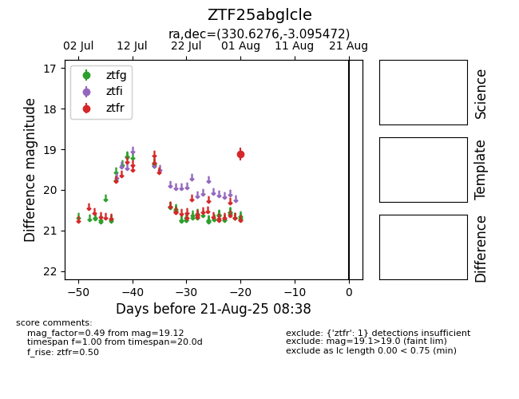

Target ZTF25abglcle at 2025-08-21 08:38, see:
FINK: fink-portal.org/ZTF25abglcle
Lasair: lasair-ztf.lsst.ac.uk/objects/ZTF25abglcle
ALeRCE: alerce.online/object/ZTF25abglcle
alt names
ZTF25abglcle (ztf,alerce)
coordinates:
equatorial (ra, dec) = (330.6276,-3.09547)
galactic (l, b) = (56.2340,-43.04999)
photometry
last ztfr=19.12
1 ztfr detections
